(Fra Steven Pollock, UC-Boulder) Gitt et par veldig store, flate, ledende kondensator-plater med totale ladninger \( +Q \) på den øverste platen og \( -Q \) på den nederste platen. Hvis vi ser bort fra kant-effekter, hvordan er ladningen fordelt i likevekt? (A) Uniformt gjennom hver plate, (B) Uniformt på hver side av hver plate, (C) Uniformt på toppen av \( +Q \) platen og på bunnen av \( -Q \) platen, (D) uniformt på bunnen av \( +Q \)-platen og på toppen av \( -Q \)-platen, (E) Noe annet.
D
Du har to veldig store, parallell-plate-kondensatorer, begge med samme areal \( A \) og med samme ladning \( Q \). Kondensator 1 har dobbelt så stort gap som kondensator 2. Hvilken har lagret mest energi? (A) 1 har lagret dobbet så mye som 2, (B) 1 har lagret mer enn dobbelt så mye som 2, (C) De har det samme, (D) 1 har dobbelt så mye som 1, (E) 2 har mer enn dobbelt så mye som 1.
A
Du har to parallell-plate-kondensatorer, begge med samme areal \( A \) og samme gap. Kondensator 1 har dobbelt så mye ladning som 2. Hvilken har størst kapasitans, \( C \)? Og mest lagret energy, \( U \)? (A) \( C_1>C_2 \), \( U_1>U_2 \); (B) \( C_1>C_2 \), \( U_1=U_2 \); (C) \( C_1=C_2 \), \( U_1=U_2 \); (D) \( C_1 = C_2 \), \( U_1>U_2 \); (E) En annen kombinasjon.
D
"The free charges in a conductor are always on the external surface of the conductor". Is this statement always true? Sketch and explain.
How can you explain with words why the capacitance of a parallel plate capacitor increases if you place a dielectric material with higher dielectric constant in the spacing between the plate.
You have a parallel plate capacitor with sides \( L \) and a spacing of \( d \). You cut it into four identical pieces. What is the capacitance of one of the four pieces compared to the original capacitor?
(From Steven Pollack, University of Colorado --- Boulder).
A coax cable is essentially one long conducting cylinder surrounded by a conducting cylindrical shell (the shell has some thickness). The two conductors are separated by a small distance. (Neglect all fringing fields near the cable's ends).
a) Draw the charge distribution (little + and - signs) if the inner conductor has a total charge of \( +Q \) on it, and the outer conductor has a total charge \( -Q \). Be precise about exactly where the charge will be on these conductors, and how you know.
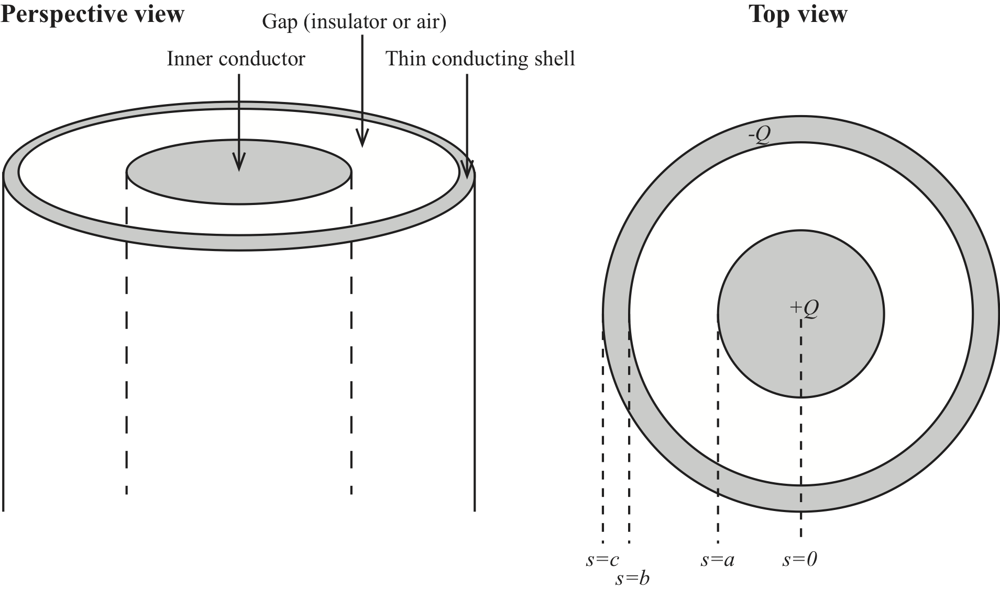
The charge distribution will have cylindrical symmetry since the system has cylindrical symmetry. Since the electrical field must be zero inside the inner cylinder, the charges must be on the surface of the inner cylinder. They must be uniformly distributed due to the cylindrical symmetry. Inside the outer cylinder, the electric field must be zero. This can be achieved by having all the \( -Q \) charge uniformly distributed on the inner surface so that a cylindrical Gauss surface inside the outer cylinder would have zero net charge inside it.
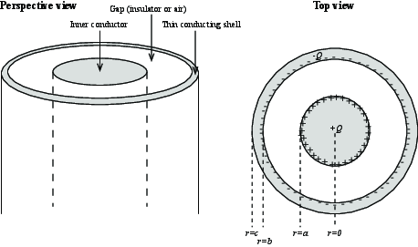
b) If you were calculating the potential difference, \( \Delta V \), (for the configuration above), between the center of the inner conductor (\( r=0 \)) and infinitely far away (\( r = \infty \)), what regions of space would have a (non-zero) contribution to your calculation?
Inside the inner cylinder, the electric field is zero, and the potential constant. In the region between the cylinders, the electric field can be found from Gauss law using a cylindrical Gauss surface. In the outer cylinder shell the electric field is zero, so potential is uniform. Outside the outer cylinder, we see that inside a cylindrical Gauss surface the net charge is zero, so that the electric field is zero. The potential is therefore constant from the inside of the outer cylinder and to infinity.
c) Now, draw the charge distribution (litte - and + signs) if the inner conductor has a total charge \( +Q \) on it, and the outer conductor is electrically neutral. Be precise about exactly where the charge will be on these conductors, and how you know.
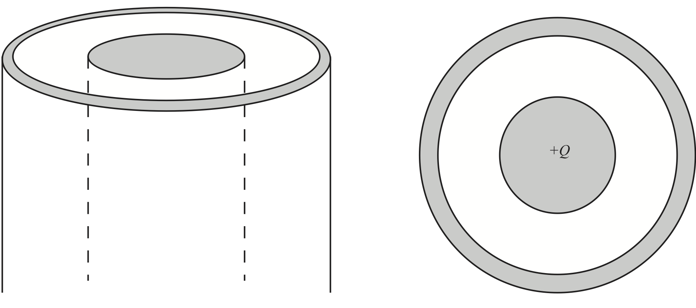
In this case, we can use the same argument as above. The charge \( +Q \) must be uniformly distributed on the outside of the inner cylinder. And there must be a charge \( -Q \) uniformly distributed on the inside of the outer cylinder. However, for the out cylinder to be neutral, a charge \( +Q \) must also be present. It can only be on the outside of the outer cylinder, and it must be uniformly distributed due to the cylindrical symmetry.
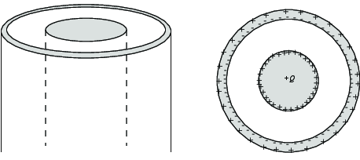
d) Consider how the charge distribution would change if the inner conductor is shifted off-center, but still has \( +Q \) on it, and the outer conductor remains electrically neutral. Draw the new charge distribution (little + and - signs) and be precise about how you know.
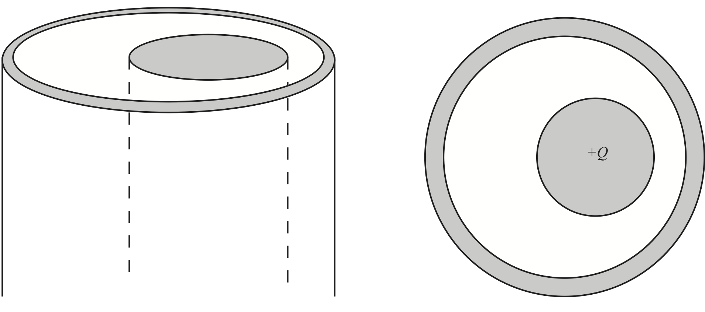
This problem is much more tricky. We can no longer assume cylindrical symmetry. However, we still know that the charges can only be on the surfaces and that they must be organized so that there is no electric field inside the condutors. This means that the electric field is zero inside the outer cylinder and the outer surface of the outer cylinder is an equipotential surface. This means that the charges on the surface of the inner cylinder will be non-uniform, probably with a higher charge density where it is closest to the outer cylinder, because the electric field will be the largest here since the distance is the smallest. (And the electric field depends on the difference in potential divided by the distance). Similarly, the charge density on the inner part of the outer cylinder will be largest where it is closest to the inner cylinder. Inside the outer cylinder the electric field is zero. Because the outer cylinder is neutral, there must be a corresponding positive charge on the outside of the conductor. However, this distribution must be uniform, otherwise it would induce an electric field inside the cylinder.
We can calculate the surface charge density using a short python program. The resulting distribution is shown in the figure.
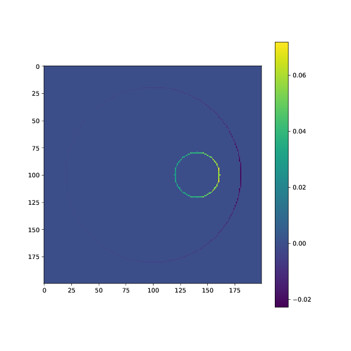
This distribution was calculated by the following Python program (which you will need to find out how works for yourself. Notice how we have calculated the surface charge density as \( \vec{E} \cdot \rhat \), where \( \rhat \) is pointing outwards from the inner cylinder for the surface of the inner cylinder and inwards from outer cylinder for the inner surface of the outer cylinder.) This program only calculates the charges on the inner cylinder and on the inner part of the outer cylinder. We could use it to calculate the surface charge density on the outer part of the outer cylinder, but then we would need to make the boundaries far away (where the potential is zero) and to set the potential of the outer cylinder to a non-zero value. However, we know how the potential and the electric field will look like outside the outer cylinder: Similar to that of a cylinder with a net charge \( +Q \) on the outer surface, so we do not need to make this calculation.
# Definere randverdier
L = 200
b = np.zeros((L,L))
b[:] = np.float('nan')
# Make inner circle
a = 0.1*L
xca = L*0.5
yca = L*0.7
for ix in range(L):
for iy in range(L):
dx = ix - xca
dy = iy - yca
rr = np.sqrt(dx*dx+dy*dy)
if (rr<a):
b[ix,iy] = 1.0
# Make outer circle
rb = 0.4*L
rc = 0.45*L
xc = L/2
yc = L/2
for ix in range(L):
for iy in range(L):
dx = ix - xc
dy = iy - yc
rr = np.sqrt(dx*dx+dy*dy)
if (rr>=rb and rr<=rc):
b[ix,iy] = 0.0
V = solvepoissonvonneumann(b,10000)
Ey,Ex = np.gradient(-V)
# Visualize the surface charge distribution
rhos = Ex.copy()
rhos[:] = 0.0
# Inner cylinder
dr = 1.0
for ix in range(L):
for iy in range(L):
dx = ix - xca
dy = iy - yca
rr = np.sqrt(dx*dx+dy*dy)
if (rr>=a and rr<=a+dr):
ux = dx/rr
uy = dy/rr
rhos[ix,iy] = Ey[ix,iy]*ux + Ex[ix,iy]*uy
# Outer cylinder
for ix in range(L):
for iy in range(L):
dx = ix - xc
dy = iy - yc
rr = np.sqrt(dx*dx+dy*dy)
if (rr>=rb and rr<=rb+dr):
ux = dx/rr
uy = dy/rr
rhos[ix,iy] = -(Ey[ix,iy]*ux + Ex[ix,iy]*uy)
plt.figure(figsize=(8,8))
plt.imshow(rhos)
plt.colorbar()
e) Now, instead of the total charge \( +Q \) being on the inner conductor, sketch the charge distribution (little + and - signs) if the outer conductor has a total charge \( +Q \) on it, and the inner conductor is electrically neutral. Be precise about exactly where the charge will be on these conductors, and how you know.
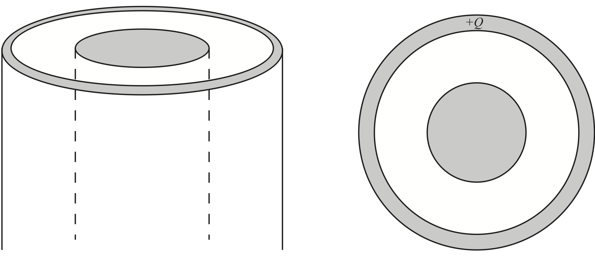
Now, we are back to the symmetric case again, and we can use simpler arguments. We realize that all the charge \( +Q \) can be distributed uniformly on the outer surface of the outer cylinder. The electric field inside both cylinders (and in the region between them) will then be zero.
f) For this case (\( +Q \) on outer conductor, inner conductor neutral) what is the potential difference, \( \Delta V \), betwen the center of the inner conductor (\( r=0 \)) and the outer conductor (\( r=c \))?
0
Because the electric field inside both conductors and inside the region between the conductors are zero, the potential is constant in this region and the potential difference \( \Delta V = 0 \).
A nerve cell is illustrated in Fig. 4. The cell has a long axon, which is approximately cylindrical in shape. A cross section of the (cylindrical) axon shows that the cell consists of a center, a thin outer membrane and a myelin sheath outside the membrane. We will assume that the interior and the exterior of the cell can be considered as good conductors. We will model this system as a cylindrical capacitor: We model the inner cylindrical part of the cell as an ideal conductor (\( r < a \)); we model the cell membrane and the myelin sheath as a cylindrical shell with dielectric constant \( \epsilon \) (\( a < r < b \)); and we model the exterior as an ideal conductor (\( b < r \)).
We will find the capacitance of this system by (i) making a drawing of the system, (ii) drawing the expected charge distributions, (iii) finding the electric field for this charge distribution, (iv) finding the potential by integrating the electric field, and (v) finding the capacitance by relating the charges to k the potential difference.
Figure 4: Illustration of a nerve cell.
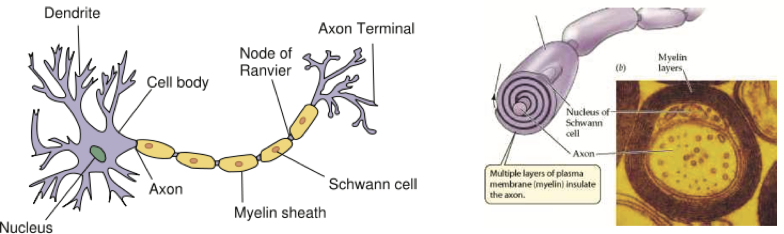
We start from an initially neutral system. We then apply a potential difference \( V \) across the dielectric shell. In this process, a charge \( Q \) is transferred from the outer shell to the inner shell. Afterwards, the exterior of the dielectric shell is at \( V=0 \) and the inner part is at \( V \).
a) Make a sketch of the distribution of charges on a cross section of the cylinder. What principles do you use when you make this drawing? Is the surface charge density the same on the inner and outer surfaces?
No
The surface charge density on the inner surface is \( Q/(2 \pi a L) \) and on the outer surface \( -Q/(2 \pi b L) \).
b) Find the electric field everywhere in terms of \( Q \).
Choose a Gaussian surface and use Gauss' law.
\( \vec{E} = (Q/L)/(2 \pi \epsilon r) \rhat \) for \( a < r < b \) and zero otherwise.
We notice that we expect the electric field to have cylindrical symmetry and that it only will have a radial component. We then find the electric field by using Gauss' law on a cylindrical surface with radius \( r \), getting $$ \begin{equation} \oint_S \vec{E} \cdot d \vec{S} = E A = E 2 \pi r L = Q_{in}/\epsilon\; , \tag{5.1} \end{equation} $$ where \( r \) is the radius, \( L \) is the length of the cylinder, $ Q_{in} $ is the net, free charge inside the cylinder, and \( \epsilon \) is the dielectric constant for the material inside the cylinder.
For \( r < a \) $Q_{in} = 0$ and \( E = 0 \).
For \( a < r < b \), \( Q_{in} = Q \) and \( E = (Q/L)/(2 \pi \epsilon r) \).
For \( b < r \), \( Q_{in} = 0 \) and \( E = 0 \).
c) Find the potential \( V(r=a) \) at the inner cylinder, when the potential \( V(r=b)=0 \) at the outer cylinder.
\( V(a) = (Q/L)/(2 \pi \epsilon) \ln (b/a) \)
We find the potential \( V(r) \) by integrating the line intergral from \( r \) to \( r=b \) where \( V=0 \): $$ \begin{equation} V(r) - V(b) = \int_{r}^{b} \vec{E} \cdot \d \vec{l} = \int_{r}^{b} \frac{(Q/L)}{2 \pi \epsilon r}\d r = \frac{(Q/L)}{2 \pi \epsilon}\left( \ln b - \ln r \right) = \frac{(Q/L)}{2 \pi \epsilon} \ln\left(\frac{b}{r}\right) \; . \tag{5.2} \end{equation} $$ and $$ \begin{equation} V(a) = \frac{(Q/L)}{2 \pi \epsilon} \ln\left(\frac{b}{a}\right) \; . \tag{5.3} \end{equation} $$
d) Find the capacitance of the cylindrical shell.
\( C = (2 \pi \epsilon L)/(\ln(b/a)) \)
The capacitance is given as \( C=Q/V \), which gives $$ \begin{equation} C = \frac{Q}{V} = \frac{2 \pi \epsilon L}{\ln(b/a)} \tag{5.4} \end{equation} $$
(From Tutorials in introductory physics, Lillian McDermott)
a) A small portion near the center of a large thin conducting plate is show magnified below. The portion has a net charge \( Q_1 \) and each side has an area \( A_1 \).
Write an expression for the charge density on each side of the conducting plate.
\( Q_1/(2 A_1) \)
The total charge of \( Q_1 \) will be distributed uniformly on both sides of the plate, that is, over an area \( 2A_1 \). The charge density is therefore \( \rho_a = Q_1/(2A_1) \).
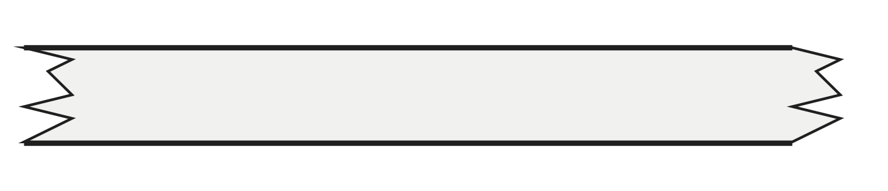
b) Use the principle of superposition to determine the electric field inside the condutor (if you have not already done so).
Is you answer consistent with your knowledge of the electric field inside a conductor? Explain.
We can find the contribution from one surface charge density by applying Gauss' law on a small cylinder of area \( dA \). We place one end outside the surface and one end inside the conductor. We can make the sides infinitely small. Thus, the only contribution is from the surfaces and not from sides. The flux through the top and bottom surfaces are \( EdA + EdA = 2EdA = Q/\epsilon = dA \rho_a / \epsilon \), and thus \( E = \rho_a/(2\epsilon) \) is a constant. However, the contribution from each surface will cancel, making the field zero inside the conductor.
c) Use the principle of superposition to determine the electric field on each side of the plate.
Does the charge on the upper surface contribute to the electric field below the plate (even though metal separates the two regions)? Explain.
\( E = Q_1/(A_1\epsilon) \)
We use the result from above. The field will be the field from the charge density on each side, giving a total field of \( E = 2 \rho_a/(2\epsilon) = Q_1/(A_1 \epsilon) \).
d) Consider instead a portion near the center of a large sheet or charge. Like the plate considered above, the portion of the sheet has a net charge \( Q_1 \) and area \( A_1 \).
How does the charge density \( \sigma' \) on this sheet compared to the charge density on each side of the plate above? Explain.
How does the electric field on one side fo the sheet of charge compare to the electric field on the same side of the charged plate? Explain.
\( \rho_a'=Q_1/A_1 \), \( E = Q_1/(A_1 \epsilon) \).
The charge density is \( \rho_a' = Q_1/A_1 \). The electric field will be \( E = \rho_a'/\epsilon = Q_1/(A_1 \epsilon) \).
A coaxial cable consists of an inner cylindrical conductor with radius \( a \) and outer cylindrical shell conductor with inner radius \( b \). A dielectric with permittivity \( \epsilon \) is placed between the conductors. The inner conductor has a potential \( V_0 \) while the outer conductor is grounded (has potential 0).
a) Find the \( \vec{E} \)-field between the conductors and the capacitance per unit length \( C' \).
\( \vec{E} = V_0/(r \ln (b/a)) \rhat \), \( C' = 2 \pi \epsilon/\ln (b/a) \)
We can choose to use either method 1 or method 2. Here, since we have given the potential, we attempt to use method 2 where we first find the potential and then find the electric field. Laplace equation in the region between the two conductors in cylindrical coordinates is $$ \begin{equation} \frac{1}{r}\frac{\partial}{\partial r} \left( r \frac{\partial V}{\partial r} \right) = 0 \; , \tag{5.5} \end{equation} $$ where we only have included the radial component due to the cylindrical symmetry of the system. This means that $$ \begin{equation} r \frac{\partial V}{\partial r} = c_1 \; , \tag{5.6} \end{equation} $$ where \( c_1 \) is a constant. This gives us: $$ \begin{equation} \frac{\partial V}{\partial r} = \frac{c_1}{r} \; , \tag{5.7} \end{equation} $$ and therefore \( V = c_1 \ln r + c_2 \). We know that \( V(b) = 0 \), which means that \( V = c_1 \ln (r/b) \) and \( V(a) = c_1 \ln (a/b) = V_0 \), and \( c_1 = V_0/\ln (a/b) \). Therefore $$ \begin{equation} V(r) = V_0 \ln (r/b)/\ln (a/b) \; . \tag{5.8} \end{equation} $$ We now need to find the electric field, which is $$ \begin{equation} \vec{E} = -\nabla V = \frac{\partial V}{\partial r} \rhat = -\frac{V_0}{r \ln (a/b)} \rhat \; , \tag{5.9} \end{equation} $$ which points outward since \( \ln(a/b) \) is negative. And we find the surface charge density on the inner cylinder to be $$ \begin{equation} \rho_s = \epsilon \vec{E} \cdot \rhat = -\frac{V_0}{a \ln (a/b)} \; . \tag{5.10} \end{equation} $$ The total charge on a cylinder of radius \( a \) and length \( L \) is \( Q = \rho_s A \), where \( A = 2 \pi a L \), and therefore: $$ \begin{equation} Q = A \rho_s = - \frac{V_0 \epsilon}{a \ln (a/b)} 2 \pi a L = - \frac{2 \pi V_0 L \epsilon}{ \ln (a/b)} \; . \tag{5.11} \end{equation} $$ We change the sign by realizing that \( \ln(a/b) = - \ln(b/a) \) and that \( \ln(b/a) \) is positive. The capacitance of a length \( L \) of the cylinder is then: $$ \begin{equation} C = Q/V_0 = \frac{2 \pi L \epsilon}{\ln(b/a)} \;. \tag{5.12} \end{equation} $$ and the capacitance per unit length, \( C' \), is $$ \begin{equation} C' = \frac{2 \pi \epsilon}{\ln (b/a)} \; . \tag{5.13} \end{equation} $$ (You could try to solve the same problem using method 1).
b) Calculate the numerical value for \( C' \) when \( \epsilon = 3 \epsilon_0 \) and \( \frac{b}{a} = 7 \).
\( C' = 8.58 \times 10^{-11}\text{F/m} \)
We find that \( C' = 2 \pi 3 \epsilon_0/ \ln (b/a) = 2 \pi 3 \, 8.85 \times 10^{−12}/\ln(7) = 8.58 \times 10^{-11}\text{F/m} \).
c) Find how much electric energy is stored per unit length of the cable.
\( U' = \frac{\pi \epsilon}{\ln \frac{b}{a}}V_0^2 \)
We apply the formula for the energy stored in a capacitor: $$ \begin{equation} U = \frac{1}{2} CV^2 \tag{5.14} \end{equation} $$ This means that the energy density (per unit length) must be: $$ \begin{eqnarray} U' &=& \frac{1}{2} C'V^2 \\ &=& \frac{\pi \epsilon}{\ln \frac{b}{a}}V_0^2 \end{eqnarray} $$
d) What is the net force acting on the outer conductor from the inner conductor?
Zero.
Due to symmetry, the total force must be zero.
Let us address this a bit closer. There cannot be any force along the cable, because the system has mirror symmetric along the \( z \)-axis: \( z \rightarrow -z \). Only a zero force has this symmetry. There cannot be any force in an azimuthal direction because the cable has rotational symmetry around the cable. There might by a force acting radially, but because the system has rotational symmetry, there would always be another equal force on the opposite site of the cable. The net radial force must therefore also be zero.
En punktladning \( Q \) befinner seg i en avstand \( h \) over et uendelig stort, ledende plan:
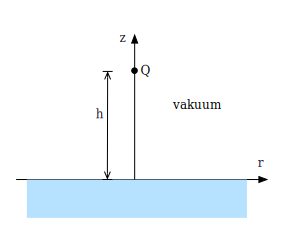
a) Finn potensialet \( V \) langs \( z \)-aksen for \( z \in [0, h) \). Finn også det elektriske feltet her.
Speilladningsmetoden
La oss si at det ledende planet ligger i \( xy \)-planet.
Potensialet over \( xy \)-planet må være likt som potensialet ville vært dersom vi i stedet for å ha et ledende plan, speilet ladningsfordelingen om \( xy \)-planet og satte motsatt ladning på ladningene på nedsiden.
Det skyldes at når vi gjør dette får vi konstant potensial akkurat i \( xy \)-planet. Det er flere måter vi kan se det på. En av dem er å innse at alle komponenter av det elektriske feltet i planet må kansellere mellom ladningene over og ladningene under \( xy \)-planet: For enhver ladning på oversiden finnes det en tilsvarende plassert ladning med motsatt fortegn på undersiden, og denne kansellerer komponenten i planet. Men den adderer til feltet normalt på planet, altså i \( z \)-retning.
Siden entydighetsteoremet sier oss at det kun skal være én løsning for det elektrostatiske potensialet gitt randbetingelser og ladningsfordeling, og vi kan sette randbetingelsen til \( V= \) konstant i \( xy \)-planet uansett om det er pga. et ledende plan eller en motsatt ladning speilet, kan det ikke ha noe å si om vi ser på situasjonen med et ladet plan, eller situasjonen med en speilet ladning. Så lenge vi ser på feltet over \( xy \)-planet.
Dermed ser vi egentlig bare på potensialet fra en dipol, langs dipolaksen: $$ \begin{equation} V = \frac{Q}{4\pi\epsilon_0 r_1} - \frac{Q}{4\pi\epsilon_0 r_2} \tag{5.15} \end{equation} $$
Vi skulle finne potensialet i området \( [0, h) \), og der får vi $$ \begin{equation} V = \frac{Q}{4\pi\epsilon_0} \left( \frac{1}{h-z} - \frac{1}{h+z} \right). \tag{5.16} \end{equation} $$
Vi finner så det elektriske feltet. Av symmetri ser vi at feltet må virke kun i \( z \)-retning, slik at vi kun ser på \( z \)-komponenten: $$ \begin{eqnarray} E_z &=& -\pz \frac{Q}{4\pi\epsilon_0} \left( \frac{1}{h-z} - \frac{1}{h+z} \right) \\ &=& -\frac{Q}{4\pi\epsilon_0} \left( \frac{1}{(h-z)^2} + \frac{1}{(h+z)^2} \right) \\ \mathbf{E} &=& -\frac{Q}{4\pi\epsilon_0} \left( \frac{1}{(h-z)^2} + \frac{1}{(h+z)^2} \right) \z \text{ for } 0 \leq z < h \end{eqnarray} $$
b) Finn den induserte ladningstettheten \( \rho_s(r) \) på lederens overflate.
Bruk \( \rho_s = \epsilon_0 E \), der \( E \) evalueres rett ovenfor lederen.
\( \rho_s = -\frac{Qh}{2\pi(r^2+h^2)^\frac{3}{2}} \)
Vi kjenner til at feltet fra en dipol normalt på dipolens akse er $$ \begin{equation} E = -\frac{Q h }{2\pi \epsilon_0 (r^2+h^2)^\frac{3}{2}} \tag{5.17} \end{equation} $$ der \( r \) er avstanden over dipolen (her er det til side for), og \( h \) er halve avstanden mellom ladningene.
Videre vet vi at i grensen mellom en leder og vakuum, så er ladningstettheten gitt som \( \rho_s = \epsilon_0 E \). Dermed er ladningsteheten gitt som $$ \begin{equation} \rho_s = -\frac{Qh}{2\pi(r^2+h^2)^\frac{3}{2}}. \tag{5.18} \end{equation} $$
c) Vis at den totale induserte ladningen på overflaten er lik \( -Q \).
Vi integrerer opp ladningsfordelingen. Her må vi huske på at vi skal integrere over hele \( xy \)-planet. Vi vekger å gjøre det i polarkoordinater, siden vi allerede har ladningsfordelingen uttrykt ved \( r \), avstanden fra \( z \)-aksen. $$ \begin{eqnarray} Q_{\text{indusert}} &=& \int_S \rho_s \d S \\ &=& -\frac{Qh}{2\pi} \int_0^\infty \frac{2\pi r \d r }{(r^2 + h^2)^\frac{3}{2}} \\ &=& \left[\frac{Qh}{\sqrt{r^2 + h^2}}\right]_0^\infty \\ &=& -Q. \end{eqnarray} $$
d) Skisser de elektriske feltlinjene overalt.
import matplotlib.pyplot as plt
import numpy as np
x = np.linspace(-5, 6, 50)
y = np.linspace(0, 8, 50)
X, Y = np.meshgrid(x, y)
sx = np.asarray([-5, -3, -2, -1, -0.5, 0, 0.5, 1, 2, 3, 5, -3, -1, 0, 1, 3])
sy = np.asarray([0,0,0,0,0,0,0,0,0,0,0, 3, 3, 3, 3, 3])
start_points = np.array([sx, sy])
print(start_points.T)
def V_dipol(x, y):
return 1.0/np.sqrt((y-1)**2+x**2) - 1.0/np.sqrt((y+1)**2+x**2)
V = V_dipol(X, Y)
Ey, Ex = np.gradient(-V)
plt.figure(figsize=(4,4))
plt.streamplot(x, y, Ex, Ey, start_points=start_points.T, density=10)
plt.xticks([])
plt.yticks([])
plt.tight_layout()
plt.savefig("fig-conductors/punktladning_over_ledende_plan.svg")
plt.savefig("fig-conductors/punktladning_over_ledende_plan.eps")
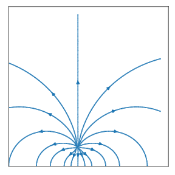
e) Finn kraften på punktladningen.
Vi bruker Coulombs lov for å finne kraften. Dette er kraften mellom to motsatt ladde partikler med ladning \( \pm Q \) og avstand \( 2h \): $$ \begin{eqnarray} \mathbf{F} &=& \frac{1}{4\pi\epsilon_0}\frac{Q(-Q)}{(2h)^2} \z \\ &=& -\frac{Q^2}{16 \pi \epsilon_0 h^2}\z \end{eqnarray} $$
a) Anta at du har en enkelt metallkule med ladning \( +Q \). Hvordan vil ladningen være fordelt i kulen? (Du kan anta at kulen er en ideell leder). Begrunn svaret.
Vi skal nå studere et system med to metallkuler. Begge kulene har radius \( a \) og de er plassert slik at det er en avstand \( d \) mellom sentrum i de to kulene. Du kan anta at \( d>2a \). Den ene kulen har ladning \( +Q \) og den andre har ladning \( -Q \).
b) Anta at ladningen er uniformt fordelt på overflaten av hver av kulene. Hva blir potensialforskjellen mellom kulene?
c) Hva er kapasitansen til systemet?
d) Vi har antatt at ladningen er uniformt fordelt. Er dette en korrekt antagelse? Tror du denne antagelsen har ført til at uttrykket vi fant for kapasitansen er for stort eller for lite sammenliknet med en reell situasjon? Begrunn svaret.
Denne oppgaven er laget slik at den vil likne på oppgaver dere kan få på 4-timers skole-eksamen med Jupyter notebooks. Det er derfor lurt å løse den i en Jupyter notebook, men vi anbefaler å levere som pdf. De siste diskusjonsdelene er kanskje noe vanskeligere enn vi forventer på eksamen, mens programmeringsdelen er helt innenfor det vi forventer at dere klarer å løse på 4 timer på skolen. Mengden og typen på oppgitt kode på eksamen er også realistisk i forhold til eksamen. Lykke til!
Vi skal i denne oppgaven studere en kondensator som består av to ledere. Hver leder består av 4 linjestykker av lengde \( 2a \). De to lederne er plassert i en avstand \( d=2a \) fra hverandre. Systemet er illustrert til venstre i figuren (a).
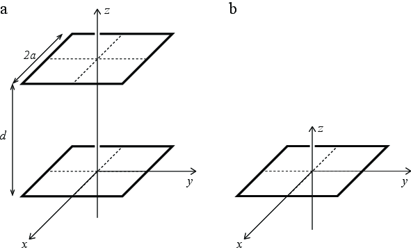
Først skal vi se på et enkelt kvadrat, som vist til høyre (b) figuren, før vi ser på systemet med begge kvadratene. Anta at kvadratet som består av fire linjestykker har ladningen \( Q \).
a) Hva blir det elektriske feltet i origo? Hva kan vi si om det elektriske potensialet uten å regne det ut? Begrunn svarene dine.
b) Vis at det elektriske potensialet langs \( z \)-aksen for kvadratet med ladning \( Q \) er \( V(z) = \frac{Q}{4 \pi \epsilon_0 a} \textrm{arcsinh} \frac{a}{\sqrt{z^2 + a^2}} \).
Se først på ett enkelt linjestykke og bruk deretter superposisjonsprinsippet.
Du kan få bruk for integralet \( \int \frac{\d x}{\sqrt{C^2 + x^2}} = \textrm{arcsinh} \frac{x}{C} \).
Du får oppgitt et program som finner det elektriske potensialet til en dipol i \( xy \)-planet. Du kan ta utgangspunkt i dette programmet når du skal løse de neste oppgavene, men du må skrive det om slik at det passer til den oppgitte problemstillingen.
# Potensialet til en dipol i xy-planet
import numpy as np
import matplotlib.pyplot as plt
def epotlist(r,Q,R):
V=0
for i in range(len(R)):
Ri = r - R[i]
qi = Q[i]
Rinorm = np.linalg.norm(Ri)
V = V + qi/Rinorm
return V
Q = []
R = []
Q.append(1.0)
R.append(np.array([1,0,0]))
Q.append(-1.0)
R.append(np.array([-1,0,0]))
Lx = 3
Ly = 3
N = 21
x = np.linspace(-Lx,Lx,N)
y = np.linspace(-Ly,Ly,N)
rx,ry = np.meshgrid(x,y)
V = np.zeros((N,N),float)
for i in range(len(rx.flat)):
r = np.array([rx.flat[i],ry.flat[i],0.0])
V.flat[i] = epotlist(r,Q,R)
plt.contourf(rx,ry,V)
c) Skriv et program som finner det elektriske potensialet i \( yz \)-planet. Visualiser potensialet og det elektriske feltet.
d) Kontroller resultatet ditt ved å sammenlikne med det analytiske uttrykket.
Visualiser det analytiske og det numeriske uttrykket \( V(z) \) i det samme plottet. (Hvis de ikke faller oppå hverandre har du gjort noe galt).
Vi skal nå se på et system som består av to slike kvadrater, ett med ladning \( +Q \) i \( z=0 \) og ett med ladning \( -Q \) i \( z= 2a \) slik at de har en avstand \( d = 2a \) fra hverandre.
e) Vi ønsker å finne en tilnærming til potensialforskjellen mellom de to kvadratene for å kunne estimere kapasitansen til systemet. Som en første tilnærming ønsker vi å bruke uttrykket vi har funnet for potensialet langs \( z \)-aksen. Vi antar at bidraget fra det positive kvadratet til potensialforskjellen mellom de to kvadratene kan tilnærmes som forskjellen i potensial mellom punktene \( (0,0,0) \) og \( (0,0,2a) \). Hva blir den totale potensialforskjellen mellom kvadratene med denne tilnærmingen? Hva blir kapasitansen til systemet med denne tilnærmingen?
Det holder å se på et av kvadratene og så bruke superposisjonsprinsippet for å finne potensialforskjellen mellom de to kvadratene.
f) Du er ikke så veldig fornøyd med denne tilnærmingen. Du tenker at du kan bruke den numeriske modellen til å finne en bedre verdi ved å bruke samme fremgangsmåte, men i stedet for å bruke potensialet fra det positive kvadratet i et punkt på \( z \)-aksen, ønsker du i stedet å finne potensialet fra det positive kvadratet i et punkt midt på en av linjene som utgjør en leder i det negative kvadratet. Deretter vil du så multiplisere med to for å finne potensialforskjellen mellom de to kvadratene. Hva blir potensialforskjellen mellom de to kvadratene med denne tilnærmingen? Og hva blir kapasitansen?
g) Plot potensialet fra det positive kvadratet langs en av linjene som utgjør det negative kvadratet. Hva oppdager du? Hva forteller det deg? Forklar hvordan vi kan finne kapasitansen til dette systemet uten å støte på dette problemet. (Du skal ikke gjøre det, men forklare hvordan det skal gjøres, slik at en kompetent person - altså en som har tatt Fys1120 - kunne gjøre det).